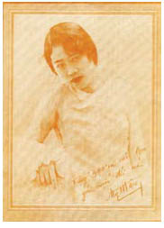

“Cung điện có thể xuất hiện ở đâu trong mớ hỗn độn này chứ?” Louis giật ống nhòm trên tay Nerron và hướng về phía đống đổ nát của Thành Phố Chết. Thật khó nhìn thấy gì dưới những đám mây dày đặc bao phủ những ngọn núi.
“Cung điện nằm phía trên thành phố.” Lelou phủi mưa đá bám trên mớ tóc mỏng. “Ở cuối con đường, nơi có những chuồng nhốt rồng.” Đương nhiên rồi. Lão Bọ chắc hẳn có thể vẽ ra một tấm bản đồ chính xác của Thành Phố Chết.
Tay huấn luyện chó dẫn theo Reckless. Hắn trói ngoặt tay anh ra sau lưng và thêm một dây thòng lọng trong qua cổ theo lệnh của hoàng tử. Louis vẫn rất cay cú về việc tù nhân của bọn họ dám nghi ngờ tài săn kho báu của hắn.
“Nhốt hắn trong xe ngựa!” hắn ra lệnh, dụi dụi đôi mắt đỏ ngầu.
Tay huấn luyện chó nhanh nhảu tuân lệnh hơn Eaumbre. Hắn tận dụng mọi cơ hội để đối xử với tù nhân tàn tệ hơn với cả lũ chó của mình. Một cú đá ngẫu nhiên, một cú huých cùi chỏ vào sườn, hoặc cú đẩy bằng báng súng. Bây giờ thì hẳn đang thô bạo xô Reckless vào xe ngựa, đến nỗi mặt anh đập mạnh vào thành xe ngựa tóe máu. Louis thích thú ra mặt được chứng kiến cảnh tượng ấy.
“Thế này là sao?” Nerron quát. “Hắn còn sống thì chúng ta mới được lợi. Ta phải tiếp tục giải thích đến khi nào đây?”
Trứng cóc làm răng của hoàng tử có màu xanh lè.
“Ngươi không phải giải thích gì với ta hết, Goyl,” hắn rít lên. “Ta chán ngấy những lời giải thích của ngươi rồi.”
Nerron cảm giác một họng súng trên lưng. Xét theo độ cao thì chính Lelou đang áp nòng súng vào lưng gã.
“Ta đã bảo phụ thân ta hàng trăm lần rồi! Tất cả bọn người Goyl phải bị nướng trong lửa cho tới lúc da chúng vỡ vụn ra. Nhưng rất tiếc là ông già lại sợ các ngươi!” Louis mím môi khinh bỉ. “Lelou báo với ta đêm nào ngươi cũng đến chỗ Reckless. Có lẽ ngươi đang mờ ám đánh bạn với hắn, nhưng ngươi không lừa được ta đâu. Kế hoạch của các ngươi là gì? Các ngươi định chia chác 50-50 và cùng nhau bán cây nỏ thần cho Albion đúng không?”
Tên huấn luyện chó bẻ ngoặt tay Nerron ra sau lưng, còn Râu Sữa chĩa súng về phía nam nhân ngư. Hắn là kẻ hữu dũng vô mưu, nhưng là một tay thiện xạ đáng ngạc nhiên.
Louis nhìn Nerron bằng ánh mắt ngạo nghễ về thân thế cao quý của mình, hàm chứa trong đó cả sự ngoan cố của một tên nhóc mười bảy tuổi tự cho mình là bất tử. Một sự kết hợp nguy hiểm.
“Ta sẽ tìm ra cây nỏ cho phụ thân, hắn tuyên bố trong lúc tay huấn luyện chó trói Nerron thật chặt như muốn dùng dây thừng cắt làn da đá của gã thành trăm mảnh, “và Albion cuối cùng sẽ phải ngưng tự tung tự tác như thể chúng làm chủ cả thế giới này. Nhưng trước hết phải xử lý bọn Goyl đã.”
Ồ, mọi việc sẽ trở nên hết sức đơn giản nếu gã giết quách Louis và Lelou đi khi còn ở Vena. Mối ác cảm với việc giết người đang trở thành chướng ngại vật cho ngươi, Nerron.
“Kẻ nào đã nghĩ ra trò này?” Cơn thịnh nộ có vị như máu trên lưỡi gã. “Lelou?”
Lão Bọ đỏ mặt tâng bốc. “Ồ không, không. Đây hoàn toàn là kế hoạch của thái tử.” Lão tặng Louis một nụ cười lo lắng. “Thái tử không thật kinh nghiệm trong việc săn kho báu, nhưng ngài đã đúng khi chỉ ra rằng chúng ta đang đi tìm món vũ khí của tổ tiên ngài để lại. Ta chỉ gợi ý rằng chúng ta không giết ngươi và Reckless vội, cuối cùng…”
“... bọn ta vẫn phải khai thác tất cả những gì các ngươi biết.” Tay huấn luyện chó nhe hàm răng vàng khè như răng lũ chó của hắn. “Về lâu đài bị che giấu... về cây nỏ thần. Và tất cả những thứ... Thái tử nghĩ ta nên lãnh nhiệm vụ này.” Lão nở một nụ cười tận tụy với Louis và vụng về nhún gối chào. “Thật ra nam nhân ngư là một chuyên gia trong vụ này,” lão nói thêm, “nhưng hoàng tử đã đúng khi cho rằng những kẻ da vảy cũng không đáng tin như những kẻ mang làn da đá.”
“Đúng, đúng, tốt thôi. Tại sao ngươi kể lể với gã tất cả những điều ấy?” Louis nhét một nhúm bột tiên nhí vào mũi. Nguồn dự trữ trong túi treo yên ngựa của hắn dường như không bao giờ cạn. “Trước tiên chúng ta lấy quả tim từ con cáo cái. Nhốt gã Goyl vào xe ngựa cùng với Reckless.”
Ba người phải hiệp sức mới trói được nam nhân ngư. Bọn họ trói hắn vào bánh xe như đã làm với Reckless trước đây. Tay huấn luyện chó lôi Nerron đến chỗ xe ngựa.
“Thái tử nói đúng, Goyl!” hắn thì thầm với gã trước khi đóng cánh cửa lại sau lưng. “Tất cả các người phải bị nướng lên. Khi ngài lên ngôi, đó sẽ là một thời đại tốt đẹp.”
“Mang ngựa lại đây!” Nerron nghe Louis líu lưỡi ra lệnh.
Reckless nằm trên một băng ghế, khuôn mặt sưng tấy vì cú va đập vào thành xe ngựa.
“Kế hoạch không phải thế, đúng không?” anh hỏi.